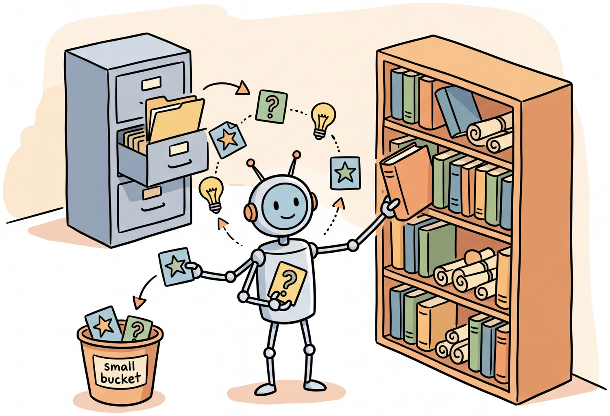

Memory is what turns a sequence of isolated exchanges into a genuine relationship.
Echo AI Agent

Prerequisites
Memory management in conversations builds on the dialogue architecture from Section 20.1 and connects to the embedding and retrieval concepts in Section 18.1 (for memory retrieval via embeddings). Understanding token limits and context window management from Section 9.2 is essential, as memory strategies are fundamentally about managing finite context windows effectively.
Memory is what transforms a stateless LLM into a conversational partner that remembers. Without memory, every conversation starts from zero, and the system forgets everything the user said 30 minutes ago. With well-designed memory, the system can recall user preferences from weeks ago, summarize long conversations without losing critical details, and maintain continuity across sessions. Building on the context window constraints discussed in Section 13.7, this section covers the full spectrum of memory architectures, from simple sliding windows to sophisticated self-managing memory systems like MemGPT/Letta, giving you the tools to choose and implement the right memory strategy for your application.
1. The Memory Problem in Conversational AI
LLMs process conversations through a fixed-size context window. When the conversation history exceeds this window, older messages are simply dropped, taking important information with them. This fundamental limitation creates several practical problems: the system forgets what the user said earlier in a long conversation, it cannot recall information from previous sessions, and it has no way to distinguish important details from routine exchanges.
Memory management in conversational AI addresses these problems through a layered architecture that mirrors (loosely) how human memory works. Short-term memory holds recent conversation turns in full fidelity. Long-term memory stores compressed summaries, key facts, and searchable records that can be retrieved when relevant using the embedding and vector search techniques from Chapter 18. The challenge lies in deciding what to remember, how to compress it, and when to retrieve it.
Human working memory holds roughly 7 items (plus or minus 2), a number established by George Miller in 1956. A 128K-token context window holds roughly 100,000 words. Yet both humans and LLMs still forget the important thing you told them ten minutes ago.
Figure 20.3.1 shows the layered memory architecture.
Input: new_message M, context_budget B tokens, memory store
Output: assembled context for LLM
// Step 1: Add new message to short-term buffer
short_term.append(M)
budget_used = token_count(system_prompt)
// Step 2: Fill context from short-term memory (newest first)
recent = []
for msg in reverse(short_term):
if budget_used + token_count(msg) > B * 0.7:
break
recent.prepend(msg)
budget_used += token_count(msg)
// Step 3: If older messages were evicted, summarize them
if evicted_messages exist:
summary = LLM.summarize(evicted_messages)
long_term.store(summary, embedding=embed(summary))
// Step 4: Retrieve relevant long-term memories
relevant = long_term.search(embed(M.content), k=3)
budget_remaining = B - budget_used
memories = fit_within_budget(relevant, budget_remaining)
// Step 5: Assemble final context
context = [system_prompt] + [memories_block] + recent + [M]
return context
2. Short-Term Memory Strategies
Short-term memory holds the most recent portion of the conversation in its original form. The simplest approach is a fixed-size buffer that keeps the last N messages. More sophisticated approaches use token-based budgeting to maximize the amount of conversation that fits within the context window. Code Fragment 20.3.1 below puts this into practice.
Token-Aware Sliding Window
# Define Message, SlidingWindowMemory; implement __init__, add_message, get_context
# Key operations: results display, memory management
import tiktoken
from dataclasses import dataclass, field
@dataclass
class Message:
role: str
content: str
token_count: int = 0
timestamp: float = 0.0
importance: float = 1.0 # 0.0 to 1.0
class SlidingWindowMemory:
"""Token-aware sliding window that maximizes conversation retention
within a fixed token budget."""
def __init__(self, max_tokens: int = 4000, model: str = "gpt-4o"):
self.max_tokens = max_tokens
self.encoder = tiktoken.encoding_for_model(model)
self.messages: list[Message] = []
self.total_tokens = 0
def add_message(self, role: str, content: str,
importance: float = 1.0) -> None:
"""Add a message and evict oldest messages if over budget."""
import time
token_count = len(self.encoder.encode(content))
msg = Message(
role=role, content=content,
token_count=token_count,
timestamp=time.time(),
importance=importance
)
self.messages.append(msg)
self.total_tokens += token_count
# Evict oldest messages until within budget
while self.total_tokens > self.max_tokens and len(self.messages) > 1:
removed = self.messages.pop(0)
self.total_tokens -= removed.token_count
def get_context(self) -> list[dict]:
"""Return messages formatted for the LLM API."""
return [
{"role": m.role, "content": m.content}
for m in self.messages
]
def get_token_usage(self) -> dict:
"""Report current memory utilization."""
return {
"used_tokens": self.total_tokens,
"max_tokens": self.max_tokens,
"utilization": self.total_tokens / self.max_tokens,
"message_count": len(self.messages)
}
# Usage
memory = SlidingWindowMemory(max_tokens=4000)
memory.add_message("user", "Hi, I'm looking for a new laptop.")
memory.add_message("assistant", "I'd be happy to help! What will you primarily use it for?")
memory.add_message("user", "Mostly software development and occasional video editing.")
print(memory.get_token_usage())
3. Long-Term Memory with Summarization
When conversations grow beyond what the sliding window can hold, summarization compresses older portions of the conversation into shorter representations. The key design decision is when to summarize and how to balance compression (saving tokens) against information retention (keeping important details).
Progressive Summarization
Progressive summarization works by maintaining multiple levels of compression. Recent messages are kept in full. Slightly older messages are summarized into a paragraph. Much older content is compressed into a single sentence or key-value pair. This approach preserves detail where it matters most (recent context) while retaining the gist of earlier exchanges. Code Fragment 20.3.2 below puts this into practice.
# Define ProgressiveSummarizationMemory; implement __init__, add_turn, _summarize_oldest
# Key operations: RAG pipeline, prompt construction, memory management
from openai import OpenAI
client = OpenAI()
class ProgressiveSummarizationMemory:
"""Memory system with progressive summarization layers."""
def __init__(self, full_window: int = 10, summary_trigger: int = 8):
self.full_messages: list[dict] = [] # Recent, full fidelity
self.summaries: list[str] = [] # Compressed older content
self.key_facts: list[str] = [] # Extracted important facts
self.full_window = full_window
self.summary_trigger = summary_trigger
def add_turn(self, user_msg: str, assistant_msg: str) -> None:
"""Add a conversation turn, triggering summarization if needed."""
self.full_messages.append({"role": "user", "content": user_msg})
self.full_messages.append(
{"role": "assistant", "content": assistant_msg}
)
# Trigger summarization when buffer is full
if len(self.full_messages) >= self.full_window * 2:
self._summarize_oldest()
def _summarize_oldest(self) -> None:
"""Summarize the oldest messages and move to summary tier."""
# Take the oldest half of messages
to_summarize = self.full_messages[:self.summary_trigger * 2]
self.full_messages = self.full_messages[self.summary_trigger * 2:]
# Format for summarization
conversation_text = "\n".join(
f"{m['role'].title()}: {m['content']}"
for m in to_summarize
)
# Generate summary
response = client.chat.completions.create(
model="gpt-4o-mini",
messages=[{
"role": "user",
"content": (
"Summarize this conversation segment in 2-3 sentences. "
"Preserve: user preferences, decisions made, "
"unresolved questions, and key facts.\n\n"
f"{conversation_text}"
)
}],
temperature=0.3,
max_tokens=200
)
summary = response.choices[0].message.content
self.summaries.append(summary)
# Extract key facts
self._extract_facts(conversation_text)
# Compress old summaries if they accumulate
if len(self.summaries) > 5:
self._compress_summaries()
def _extract_facts(self, text: str) -> None:
"""Extract durable facts from conversation text."""
response = client.chat.completions.create(
model="gpt-4o-mini",
messages=[{
"role": "user",
"content": (
"Extract key facts from this conversation that should "
"be remembered long-term. Return as a bullet list. "
"Focus on: user preferences, personal details, "
"decisions, and important context.\n\n" + text
)
}],
temperature=0.0,
max_tokens=200
)
facts = response.choices[0].message.content.strip().split("\n")
self.key_facts.extend(
f.strip("- ").strip() for f in facts if f.strip()
)
def _compress_summaries(self) -> None:
"""Merge multiple summaries into a single compressed summary."""
all_summaries = "\n".join(self.summaries)
response = client.chat.completions.create(
model="gpt-4o-mini",
messages=[{
"role": "user",
"content": (
"Merge these conversation summaries into a single "
"concise paragraph. Keep the most important details.\n\n"
+ all_summaries
)
}],
temperature=0.3,
max_tokens=200
)
self.summaries = [response.choices[0].message.content]
def build_context(self, system_prompt: str) -> list[dict]:
"""Build the full context for an LLM call."""
context = [{"role": "system", "content": system_prompt}]
# Add key facts
if self.key_facts:
facts_text = "Key facts about this user:\n" + "\n".join(
f"- {f}" for f in self.key_facts[-15:]
)
context.append({"role": "system", "content": facts_text})
# Add conversation summaries
if self.summaries:
summary_text = (
"Summary of earlier conversation:\n"
+ "\n".join(self.summaries)
)
context.append({"role": "system", "content": summary_text})
# Add full recent messages
context.extend(self.full_messages)
return context
The most common mistake in conversation summarization is treating all information equally. User preferences ("I'm vegetarian"), decisions ("Let's go with the blue one"), and unresolved questions ("I still need to figure out the budget") are far more important to preserve than routine pleasantries or repeated information. A good summarization prompt explicitly prioritizes these categories of information.
4. Vector Store Memory
Vector store memory enables semantic retrieval of past conversation content. Rather than relying solely on recency (as the sliding window does), vector search retrieves the most relevant past exchanges based on what the user is currently discussing. This is particularly powerful for long-running relationships where a user might reference something from weeks ago. Code Fragment 20.3.3 below puts this into practice.
# Define MemoryEntry, VectorMemoryStore; implement __init__, store, retrieve
# Key operations: embedding lookup, results display, retrieval pipeline
from openai import OpenAI
import numpy as np
from dataclasses import dataclass
from typing import Optional
client = OpenAI()
@dataclass
class MemoryEntry:
text: str
embedding: list[float]
timestamp: float
session_id: str
entry_type: str # "turn", "summary", "fact"
metadata: dict = None
class VectorMemoryStore:
"""Semantic memory using embeddings for retrieval."""
def __init__(self):
self.entries: list[MemoryEntry] = []
def store(self, text: str, session_id: str,
entry_type: str = "turn",
metadata: dict = None) -> None:
"""Embed and store a memory entry."""
import time
embedding = self._embed(text)
entry = MemoryEntry(
text=text,
embedding=embedding,
timestamp=time.time(),
session_id=session_id,
entry_type=entry_type,
metadata=metadata or {}
)
self.entries.append(entry)
def retrieve(self, query: str, top_k: int = 5,
entry_type: Optional[str] = None,
recency_weight: float = 0.1) -> list[dict]:
"""Retrieve the most relevant memories for a query."""
query_embedding = self._embed(query)
scored = []
for entry in self.entries:
if entry_type and entry.entry_type != entry_type:
continue
# Cosine similarity
similarity = self._cosine_sim(
query_embedding, entry.embedding
)
# Blend similarity with recency
import time
age_hours = (time.time() - entry.timestamp) / 3600
recency_score = 1.0 / (1.0 + age_hours * 0.01)
final_score = (
(1 - recency_weight) * similarity
+ recency_weight * recency_score
)
scored.append({
"text": entry.text,
"score": final_score,
"similarity": similarity,
"entry_type": entry.entry_type,
"session_id": entry.session_id,
})
scored.sort(key=lambda x: x["score"], reverse=True)
return scored[:top_k]
def _embed(self, text: str) -> list[float]:
"""Generate embedding for text."""
response = client.embeddings.create(
model="text-embedding-3-small",
input=text
)
return response.data[0].embedding
@staticmethod
def _cosine_sim(a: list[float], b: list[float]) -> float:
a, b = np.array(a), np.array(b)
return float(np.dot(a, b) / (np.linalg.norm(a) * np.linalg.norm(b)))
# Example: Store and retrieve memories
store = VectorMemoryStore()
store.store(
"User prefers Python over JavaScript for backend work",
session_id="session_001", entry_type="fact"
)
store.store(
"User is building a recipe recommendation app",
session_id="session_001", entry_type="fact"
)
store.store(
"Discussed database options: PostgreSQL vs MongoDB. "
"User leaning toward PostgreSQL for relational data.",
session_id="session_002", entry_type="summary"
)
# Later, when user asks about databases again
results = store.retrieve("What database should I use?", top_k=2)
for r in results:
print(f"[{r['entry_type']}] {r['text'][:80]}... (score: {r['score']:.3f})")
The implementation above builds a vector memory store from scratch for pedagogical clarity. In production, use Mem0 (install: pip install mem0ai), which provides a managed memory layer with automatic extraction of facts, user preferences, and conversation summaries, plus built-in vector search and memory consolidation:
# Production equivalent using Mem0
from mem0 import Memory
memory = Memory()
memory.add("User prefers Python for backend work", user_id="alice")
memory.add("Building a recipe recommendation app", user_id="alice")
results = memory.search("What database should I use?", user_id="alice")
for r in results:
print(r["memory"], r["score"])
5. MemGPT / Letta Architecture
MemGPT (now Letta) introduced a groundbreaking approach to memory management: instead of the application code managing memory, the LLM itself decides when and what to save, retrieve, and forget. This self-managed memory architecture is inspired by operating system virtual memory, where a hierarchical memory system creates the illusion of unlimited memory through intelligent paging between fast (context window) and slow (external storage) tiers. Figure 20.3.2 depicts the MemGPT/Letta architecture with its three memory tiers.
The MemGPT approach requires the LLM to reliably use memory management functions. In practice, this works best with capable models (GPT-4 class or above) that can reason about when information should be saved for later versus kept in working memory. Smaller models tend to either save too much (filling archival memory with noise) or too little (failing to preserve important context). Careful prompt engineering for the memory management instructions is essential.
6. Session Persistence and User Profiles
For applications where users return across multiple sessions, persistent storage bridges the gap between conversations. A user profile system accumulates knowledge about the user over time, creating an increasingly personalized experience. The profile should capture stable preferences, biographical facts, and interaction patterns without storing sensitive data unnecessarily. Code Fragment 20.3.4 below puts this into practice.
# Define UserProfileManager; implement __init__, load_profile, save_profile
# Key operations: RAG pipeline, prompt construction, API interaction
import json
from datetime import datetime
from pathlib import Path
class UserProfileManager:
"""Manages persistent user profiles across sessions."""
def __init__(self, storage_dir: str = "./user_profiles"):
self.storage_dir = Path(storage_dir)
self.storage_dir.mkdir(exist_ok=True)
def load_profile(self, user_id: str) -> dict:
"""Load or create a user profile."""
profile_path = self.storage_dir / f"{user_id}.json"
if profile_path.exists():
with open(profile_path) as f:
return json.load(f)
return self._create_default_profile(user_id)
def save_profile(self, user_id: str, profile: dict) -> None:
"""Persist the user profile to disk."""
profile["last_updated"] = datetime.now().isoformat()
profile_path = self.storage_dir / f"{user_id}.json"
with open(profile_path, "w") as f:
json.dump(profile, f, indent=2)
def update_from_conversation(self, user_id: str,
conversation: list[dict]) -> dict:
"""Extract profile updates from a completed conversation."""
profile = self.load_profile(user_id)
# Use LLM to extract profile-worthy information
extraction_prompt = f"""Analyze this conversation and extract any new
information about the user that should be remembered for future sessions.
Current profile:
{json.dumps(profile['preferences'], indent=2)}
Conversation:
{self._format_conversation(conversation)}
Return JSON with two fields:
- "new_preferences": dict of any new preferences discovered
- "new_facts": list of new biographical/contextual facts
- "corrections": dict of any corrections to existing profile data
Only include genuinely new or corrected information."""
response = client.chat.completions.create(
model="gpt-4o-mini",
messages=[{"role": "user", "content": extraction_prompt}],
response_format={"type": "json_object"},
temperature=0
)
updates = json.loads(response.choices[0].message.content)
# Apply updates
if updates.get("new_preferences"):
profile["preferences"].update(updates["new_preferences"])
if updates.get("new_facts"):
profile["facts"].extend(updates["new_facts"])
if updates.get("corrections"):
profile["preferences"].update(updates["corrections"])
# Update session count
profile["session_count"] += 1
profile["last_session"] = datetime.now().isoformat()
self.save_profile(user_id, profile)
return profile
def get_context_string(self, user_id: str) -> str:
"""Generate a context string for inclusion in system prompts."""
profile = self.load_profile(user_id)
parts = [f"Returning user (session #{profile['session_count']})."]
if profile["preferences"]:
prefs = "; ".join(
f"{k}: {v}" for k, v in profile["preferences"].items()
)
parts.append(f"Known preferences: {prefs}")
if profile["facts"]:
parts.append("Known facts: " + "; ".join(profile["facts"][-5:]))
return " ".join(parts)
def _create_default_profile(self, user_id: str) -> dict:
return {
"user_id": user_id,
"created": datetime.now().isoformat(),
"last_updated": datetime.now().isoformat(),
"last_session": None,
"session_count": 0,
"preferences": {},
"facts": [],
"interaction_style": {}
}
@staticmethod
def _format_conversation(conversation: list[dict]) -> str:
return "\n".join(
f"{m['role'].title()}: {m['content']}"
for m in conversation
)
User profile systems store personal information that may be subject to data protection regulations (GDPR, CCPA). Implement clear data retention policies, give users the ability to view and delete their profiles, minimize the data you store, and ensure appropriate encryption for data at rest. Never store sensitive information (health conditions, financial data, relationship details) without explicit consent and a clear justification.
7. Comparing Memory Approaches
| Approach | Capacity | Retrieval | Complexity | Best For |
|---|---|---|---|---|
| Sliding Window | Fixed (last N turns) | Recency only | Low | Short conversations, simple bots |
| Summarization | Extended | Most recent summary | Medium | Medium-length sessions |
| Vector Store | Unlimited | Semantic similarity | Medium-High | Multi-session, topic revisits |
| Entity Extraction | Compact facts | Key-value lookup | Medium | User profiles, preferences |
| MemGPT / Letta | Unlimited + managed | Agent-driven search | High | Complex, long-running agents |
| Hybrid (recommended) | Tiered | Recency + semantic | High | Production applications |
Section 20.3 Quiz
Show Answer
Show Answer
Show Answer
Show Answer
Show Answer
The layered memory architecture described here (sliding window, summaries, vector store, user profiles) closely parallels the Atkinson-Shiffrin model of human memory: sensory memory (the raw token window), short-term memory (recent conversation turns), and long-term memory (vector-stored past interactions and user profiles). The summarization step, which compresses conversation history into key points, mirrors the consolidation process that transfers information from short-term to long-term memory during sleep. Even the recency bias in retrieval has a cognitive parallel: the serial position effect, where humans better remember the first (primacy) and last (recency) items in a list. These parallels are not accidental; they reflect a convergence driven by the same underlying constraints. Both human and artificial conversational agents must operate under finite attention (context window/working memory), must decide what to remember and what to forget, and must retrieve relevant memories efficiently from a vast store. The design of conversational memory systems is, in a real sense, cognitive architecture engineering.
Key Takeaways
- Memory is layered: Production systems combine short-term memory (sliding window), long-term memory (summaries and vector stores), session persistence, and user profiles. Each layer serves a different purpose and operates at a different timescale.
- Token budgeting is essential: Every byte of memory included in the context window competes with the space available for the system prompt, retrieved knowledge, and the model's generation. Use token-aware memory management to maximize utilization without overflow.
- Summarization must be selective: Not all conversation content deserves equal preservation. Prioritize user preferences, decisions, unresolved questions, and key facts. Routine pleasantries and repeated information can be safely compressed.
- Vector retrieval enables long-term recall: Embedding-based memory search allows the system to retrieve relevant information from weeks or months ago based on what the user is currently discussing, transcending the limitations of recency-only approaches.
- Self-managed memory is the frontier: MemGPT/Letta demonstrates that LLMs can manage their own memory through function calls, creating more flexible and context-aware memory systems than hand-coded heuristics. This approach works best with capable models and careful prompt engineering.
Who: An ML engineer at a wealth management fintech serving 50,000 clients
Situation: Clients expected the chatbot to remember their portfolio preferences, risk tolerance, and prior conversations across sessions. A client who said "I told you last month I want to avoid tech stocks" expected that preference to persist.
Problem: Storing full conversation histories consumed the entire 128K context window within 3 to 4 sessions. Truncating older messages caused the bot to "forget" critical preferences and repeat questions, frustrating high-value clients.
Dilemma: Summarizing old conversations compressed them effectively but lost specific details (exact allocation percentages, named stocks). A vector-based retrieval memory preserved details but sometimes surfaced irrelevant old context that confused the current conversation.
Decision: They implemented a three-tier memory system: (1) a structured client profile storing key facts as explicit key-value pairs (risk tolerance: moderate, sector exclusions: [tech, tobacco]), (2) a rolling summary of the last 5 sessions, and (3) a vector store of all conversation turns for on-demand retrieval when the client referenced a specific past discussion.
How: After each session, an LLM extraction step updated the structured profile with any new preferences. The system prompt always included the profile and recent summary; vector retrieval was triggered only when the user explicitly referenced past conversations.
Result: Client satisfaction scores rose from 3.6 to 4.4 out of 5. The "repeated question" complaint rate dropped from 23% to 3%. Context window usage stayed under 40K tokens even for clients with 50+ sessions.
Lesson: Tiered memory (structured facts, summaries, and searchable archives) outperforms any single strategy because different types of information have different retrieval patterns and retention requirements.
Retrieval-augmented memory stores conversation history in a vector database and retrieves relevant past exchanges based on the current query, enabling effectively unlimited conversation length. Hierarchical memory architectures maintain multiple memory tiers (working memory, episodic memory, semantic memory) inspired by cognitive science, with different retention and retrieval policies for each tier. Memory compression with LLMs uses a smaller model to continuously summarize and consolidate conversation history, keeping the most important information within the context window. Research into shared memory across conversations is developing methods for agents to accumulate knowledge about users across sessions without violating privacy constraints.
What's Next?
In the next section, Section 20.4: Multi-Turn Dialogue & Conversation Flows, we examine multi-turn dialogue and conversation flow management, handling complex interactions with branching logic.
References & Further Reading
Packer, C. et al. (2023). "MemGPT: Towards LLMs as Operating Systems." arXiv preprint.
Proposes treating LLMs like operating systems with tiered memory management. Introduces virtual context management for handling conversations beyond context limits. Foundational for long-context dialogue systems.
Park, J.S. et al. (2023). "Generative Agents: Interactive Simulacra of Human Behavior." UIST 2023.
Creates believable agents with memory retrieval, reflection, and planning capabilities. Demonstrates how memory architectures enable emergent social behaviors. Influential for anyone building agents with persistent memory.
Introduces a memory bank mechanism that stores and retrieves past interactions adaptively. Includes forgetting curves inspired by cognitive science. Practical architecture for long-term conversational memory.
Provides benchmarks and evaluation methods for long-term conversational memory. Tests whether agents can maintain coherence over hundreds of turns. Essential for teams validating memory system performance.
Letta (formerly MemGPT) Documentation.
The production platform built on the MemGPT research, offering tiered memory and stateful agents. Provides APIs for building agents with persistent memory. Recommended for production memory-augmented assistants.
Zep: Long-Term Memory for AI Assistants.
A memory layer for AI applications with automatic summarization, entity extraction, and temporal awareness. Integrates with popular LLM frameworks. Practical choice for adding memory to existing chatbots.